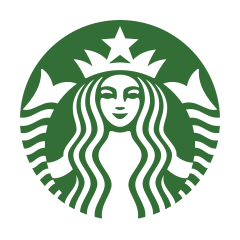

- Demonstrated leadership by training new baristas and adapting to their learning needs
- Worked collaboratively with fellow baristas to deliver quality food and beverages in a timely manner
- Listened to customer concerns/feedback to resolve any issues
About Me
My name is Liam Willis, and I am currently studying Computer Science at the University of Massachusetts Boston. As of right now, I am actively seeking internship opportunities for either the Spring or Summer of 2025. I am especially interested in web development and computer graphics, and I am studying frameworks and technologies such as React.js and WebGL/WebGPU concurrently alongside my college courses to expand my knowledge and expertise in these areas! Feel free to browse my projects and resume and contact me through any of my social links (left) if you have any learning opportunities for software development to strengthen my skills!
Contact Information
- Email: liamwillis0@gmail.com
- LinkedIn: https://www.linkedin.com/in/liam-willis-b328a4242/
Education
I have studied at several institutions:
- University of Massachusetts Boston | Computer Science BS | Expected December 2025 | 4.0 GPA
- University of Massachusetts Amherst | August 2021 - December 2021 | 4.0 GPA
- Sturgis Charter Public School | International Baccalaureate Diploma | Graduated June 2021 | 4.18 GPA
Skills
I am proficient with the following programming languages, frameworks, and technologies:
- HTML
- CSS
- JavaScript
- Python
- C/C++
- Java
- Assembly Language
- Coq
- WebGL
- WebGPU
- three.js
- Git/GitHub
- Excel
- PowerShell
Relevant Coursework
Computer Science Courses:
- Computing in Python
- Programming in C
- Computing with Data Structures in Java
- Advanced Algorithms
- Computer Architecture and Organization
- Social Issues and Ethics in Computing
- Theory of Computation
- Operating Systems
- Computer Graphics
Mathematics and Other Courses:
- Linear Algebra
- Discrete Mathematics
- Calculus I and II
- Physics I and II
- Probability and Statistics
Work History
Barista Trainer at Starbucks | May 2022 - September 2024

Food Service Aide at Beth Israel Deaconess Medical Center | June 2021 - August 2021
- Worked with other food service employees to ensure that strict food safety standards were followed
- Communicated with patients and nurses to ensure well-being
Accolades
- University of Massachusetts Boston | Dean's List | September 2022 - Present
- Rensselaer Medal Award | Awarded for Outstanding Achievement in both Mathematics and Physics | Received 2021
- Harbor One Community Scholarship | Awarded for Exceptional Academic Performance and Community Service | Received 2021
- University of Massachusetts Amherst Alumni Network Scholarship | Awarded for Exceptional Academic Performance | Received 2021
Acknowledgements
The layout of this website in its current state is inspired by the layout of Professor Swami Iyer's website of the University of Massachusetts Boston.